Cross-border collaborations – The Horse project ...
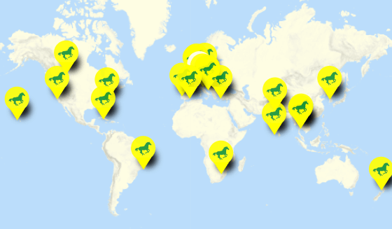
Map with collaboration projects :: click to open ::
The projects are published on dontwastemy.energy
Testimonials
How is it to use
"The Horse" concept with the
«befter» method ?
Two insights from
Ilkay Nargaz Gulek (Turkish culture and English teacher from Izmir) and
Reshma Rajesh (student from Kerala, India), 2022
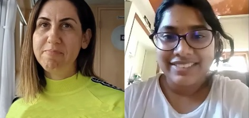
Praveena (India),
Ann (Belgium),
Mary (India) and the students
Lars and
Dharany
from Switzerland share their collaboration experiences, "The Horse" concept and the
"befter" method (dontwastemy.energy).
Schwyzerdütsch: Lars
über ihr Projekt
"Water supply in agriculture" und die Zusammenarbeit mit dem Team in Indien.
All Interviews above on one page (archive.org)
Some statistics
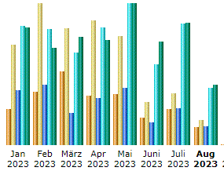 In 2023 dontwastemy.energy has hosted 253,697 wonderful visitors, with 129,449 unique individuals and a total of 1,442,854 page views (excluding search engines and bots).The Horse projects
Below is a selection of realized collaboration projects from various countries.
More details since 2016 are available at The Horse Education since 2016.
Would you like to take part in The Horse Concept? Get in touch.
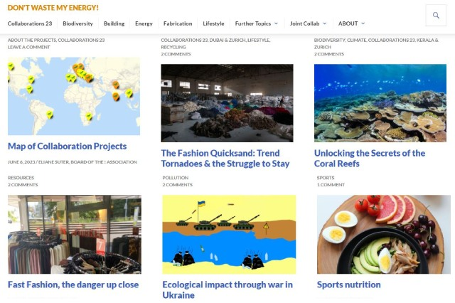
Collaborations 2023
This round features collaborations between teams from Switzerland and Dubai on topics such as fast fashion, sports nutrition, video games, and energy consumption.
About the "Collaboration Projects 23"
Collaboration 2023 contributions
Collaboration Teams
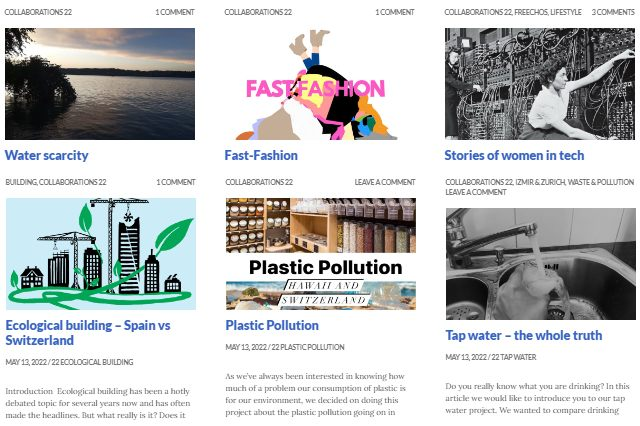
Collaborations 2022
This year, young people initiated and carried out collaborative projects across cultures and borders using "The Horse" concept.
About the "Collaboration Projects 22"
Collaboration 2022 contributions
Collaboration Teams
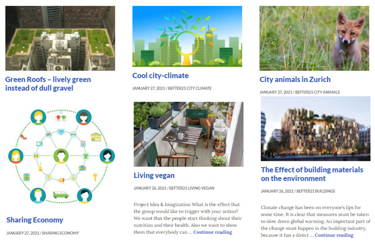
City Climate 2020/21
Focused on "City Climate" with special emphasis on "City Trees" and related urban sustainability topics.
About the "City Climate" projects
City Climate projects
City Climate Teams
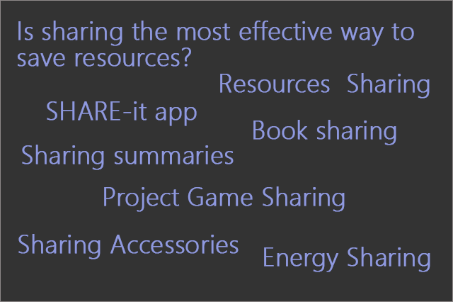
Sharing 2020
Projects based on sharing and using instead of owning. Students from Zurich implemented creative sustainable ideas.
About the Sharing projects
Sharing Teams
Sharing projects
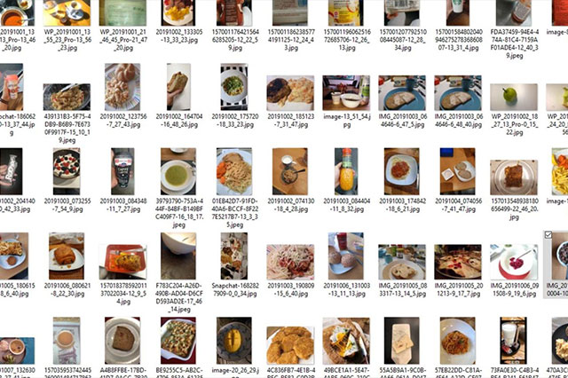
Food & Climate 2019/20
Exciting projects on renewable energy and climate challenges in collaboration with teams from Antwerp, Kerala, Dehli, and Zurich using the befter method.
About the Food & Climate projects
Teams Zurich, Antwerp, Kerala, Dehli
Food & Climate projects
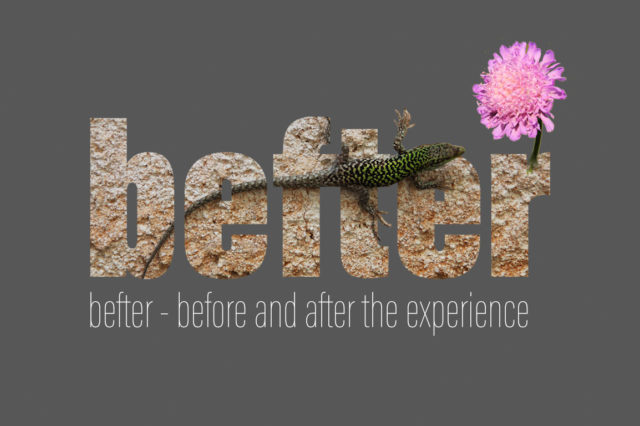
befter projects 2018/2019
«before and after the experience»: Students from Antwerp and Zurich used the befter method through stages of imagination, research, team discussion, experience, self-reflection, publishing, and expert feedback.
More about the befter concept
befter Teams 2018 - Zurich
befter Teams 2019 - Antwerp & Zurich
Already realized befter projects
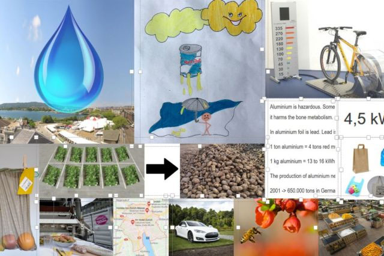
Scenarios Z.B. 2018
Scenarios Z.B. – Z.urich B.erlin: Students from Zurich/Wetzikon and Berlin explored creative, unconventional ideas and narratives.
About Z.B.
Teams Berlin & Zurich
Z.B. projects
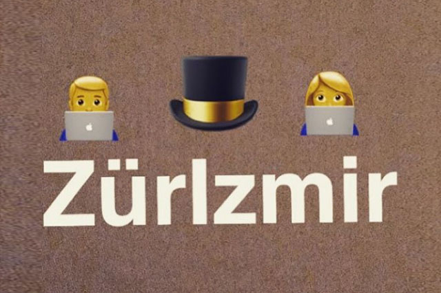
ZürIzmir 2017/18
A cross-cultural project comparing environmental topics between Zurich and Izmir. International student teams explored local environments.
About the ZurIzmir projects
Topics' pick list
Teams Izmir & Zurich
ZürIzmir projects
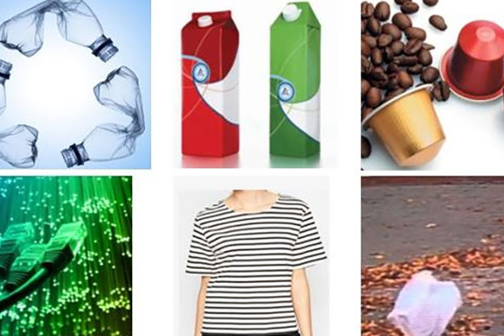
w2w 2016/17
w2w – from where to where: Students investigate the lifecycle of everyday items. Social media channels (Instagram, FB, Twitter) were first used for these projects.
About the w2w projects
Teams of w2w
w2w projects
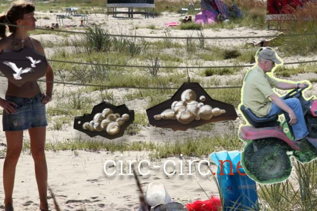
Energy 2015/16
The Horse concept is born! Students answered renewable energy questions on the project website dontwastemy.energy
formerly www.save-energy.tips
About the birth of The Horse Concept
The Energy Teams Zurich/Wetzikon
Energy projects
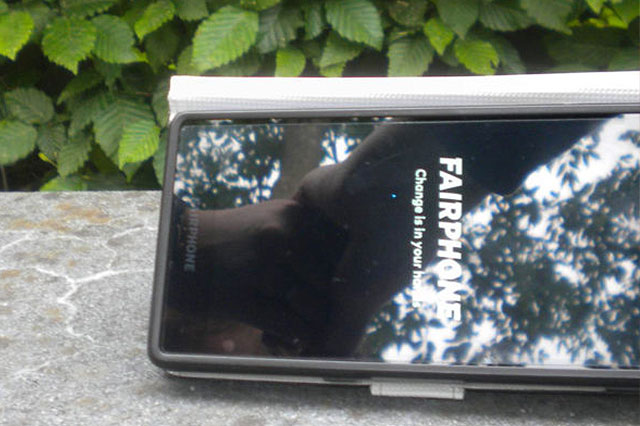
FreeChos
FreeChos – Freely chosen topics. An opportunity for self- and team-driven, practice-oriented projects guided by professionals.
All FreeChos
THE ! Team
Eliane Suter
President of THE ! association
Concept, environmental & educational advisor.
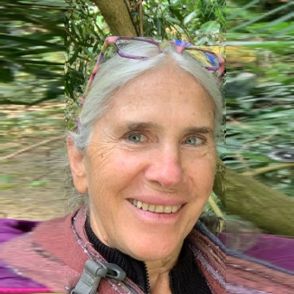
Barbara Jäckli
Board Member
Biologist, environmental activist, translator, former teacher.
Dominik Fehr
Board Member
Concept, Technical Head.
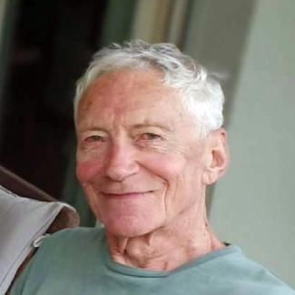
Peter Binz
Board Member
Former teacher, biochemist and musician.
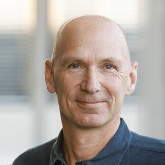
Prof. Dr. Stefan Kammhuber
Scientific advisor, director ikik, Institute for Communication and Intercultural Competence.
Thomas Mani P
Coordinator South India
Former Vice Principal Christ Nagar School.
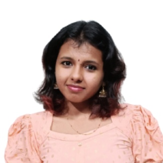
Sivani L R
Project assistant, THE ! ambassador
Student of Computer Science, LBS Institute of Technology, India.
Jasmine Schmid
Marketing, Graphics, Social Media
Graphic Design Communication, Art School Zurich, PR.
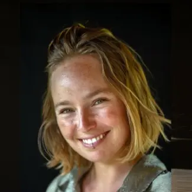
Jael Locher
Project Assistant, THE ! ambassador
MSc in Environmental Science and Engineering.
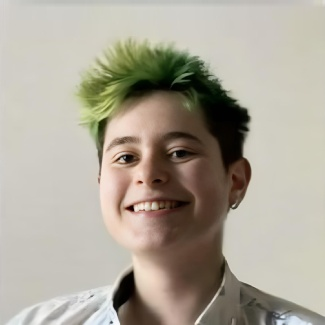
Katerina Kuneva
Coordination, Technical assistant
UZH, Student of Informatics and Computational Science and Engineering.
Join in / donate
«The Horse» project is a non‑profit association.
We believe in cross-border collaboration and learning trought experiences to change reality. For a distinct more enjoyable future!
We believe in cross-border collaboration and learning trought experiences to change reality. For a distinct more enjoyable future!
Becoming a "Horse" member
If you are passionate about the ideas behind "The Horse" concept and wish to contribute your commitment, ideas, or interests, we warmly welcome you as a new "Horse" member – with no membership fee required!
We do need funds to support projects, improve the concept, run the infrastructure, and reward those making a difference. For Swiss residents, the standard one-year membership fee is 50 CHF (not mandatory).
How to join? Engage with "The Horse" as a collaborator, advisor, facilitator, ambassador or donor.
Get in touch: hello@the-horse.education.
Donating options
IBAN, Bank Account
IBAN: CH89 0839 0036 1944 1000 0
THE ! association, 8057 Zürich, Switzerland
Alternative Bank Schweiz AG
4601 Olten, ABS (abs.ch)
Credit Card, PayPal
Membership (stripe.com)
Donation (free amount) (stripe.com)
TWINT, QR-Bill/QR-Rechnung
Association headquarters:
THE ! association
Friedheimstr. 5, c/o B. Jäckli
8057 Zürich, Switzerland
For questions, please contact us at hello@the-horse.education.
THE ! association
Friedheimstr. 5, c/o B. Jäckli
8057 Zürich, Switzerland
For questions, please contact us at hello@the-horse.education.
THE ! association
The Horse Education (THE) ! association' main purpose is the promotion and dissemination of «The Horse Concept». The association was founded on 9/19/2018 by Eliane Suter, Barbara Jäckli, Peter Binz and Dominik Fehr. These form the board of the association, Eliane is the president.
Why is it called «The Horse»?
The proud, graceful horses symbolize our journey: carrying only the essentials as we explore the world together. Inspired by the unforgettable Camargue horses and guided by our lighthouse emblem, we navigate cross-cultural collaborations with shared light.
Our aim is to make our concept accessible worldwide so teachers and young learners can apply and test expert knowledge, competences and tools in the context of a project.
The Association Board
We are an interdisciplinary team of educators, environmental scientists, practitioners, and web experts.
The purpose of the association is to:
- Foster Collaborative Innovation: Encourage practical, cross-generational, and cross-regional collaborations that connect learners, teachers, experts, and other passionate participants to spread our transformative concept.
- Advance Digital Education: Develop, provide, and maintain cutting-edge web-based tools, resources, and infrastructure, ensuring they remain accessible and fully supported with the necessary funding.
- Promote Sustainability and Social Fairness: Champion sustainable thinking and actions while advocating for social equity and a healthy environment both locally in Switzerland and globally—in alignment with the UN Sustainable Development Goals.
- Inspire Civic Engagement: Empower individuals to participate actively in public life and make well-informed, evidence-based decisions that drive positive change.
Statutes
THE ! association statutes , 2019-04-01 (PDF)
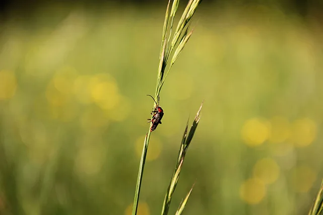
It's always possible to achieve higher goals.
It's always possible to achieve higher goals.
Contact
Do you have a question, comment, or would you like to try the concept? We’d love to hear from you!
Contact: engage@the-horse.education
Seat of the association / Vereinssitz
THE ! association
Friedheimstr. 5, c/o B. Jäckli
8057 Zürich, Switzerland
Press «The Horse» project
Seit 2016. Since 2016.
Why is it called «The Horse»
«The Horse» Konzept auf einer Seite erklärt (PDF, 03/2023, Deutsch)
«The Horse» concept overview (PDF, 07/2020)
Projektwebsite dontwastemy.energy
News & In-depth information
Lehr- und Lernweb «The Horse» Konzept (Deutsch)
Teaching & Learning Web «The Horse» concept (English)
Publications about «The Horse»
[07/22/2023] Doppelseitiger Artikel und Onlinebeitrag im Zürcher Oberländer über The Horse project! Deutsch.
Publikation im Magazin FachFrauen Umwelt, 03/2020. «The Horse» Konzept – Kollaborative & kulturübergreifende Umweltprojekte (Deutsch, PDF)
Movetia National Agency for Exchange
-
Kulturübergreifende Umweltbildung mit «The Horse» Konzept
Movetia – Nationale Agentur für Austausch und Mobilitä. (Deutsch) -
Cross-cultural environmental education with «The Horse» concept
Movetia – National Agency for Exchange and Mobility. (English) -
L'éducation environnementale interculturelle avec le concept «The Horse»
Movetia – Agence nationale pour la mobilité. (Français) -
Educazione ambientale interculturale con il concetto «The Horse»
Movetia – Agenzia nazionale per gli scambi. (Italiano)
Projects presented in the Studentenzeitung/student magazine, WKVW inside journal, issues 2023, 2022, 2021.
Video testimonials
-
Testimonials about working with «The Horse» Konzept
Experiences from teachers, students, and founder Eliane Suter. - Lars - Erfahrungen mit dem «The Horse» Konzept Deutsch.
Some background
- Behind «The Horse» concept: Goals, ideas, links, and learning methods (COIL, bili, active learning)
- Our new «befter» method (before & after the experience) with seven steps.
- bili CLIL IDAF (Deutsch).
- Infrastructure of «The Horse» project (PDF, 2018).
-
Nach Bedarf steht ein Moodle für die Kollaborationen zur Verfügung!
A Moodle instance is available for collaboration if desired!
Participations, presentations, workshops
-
Geneva Forum at
United Nations, 12/14/2022
«The Horse» concept – presentation and vision by Eliane Suter Video (6 min.),
6th Annual International Conference on Participatory Research, Citizen Sciences, Crowd-Innovation and Fab Labs for Peace and Development. -
didacta DIGITAL Swiss Basel, 28.-30.11.2019
The Horse: Digitaler Lernort zur grenzübergreifenden Bildung mit eigenem Stand, Deutsch (Link: archive.org, vorm. didacta-digital.ch) -
Bili – Erfa –Tagung 2018: bili: digital und analog (Pädagogische Hochschule Zürich); introduction to possibilities of «The Horse» concept;
Slides presentation: Teaching & Learning Web «The Horse» (sway.com, English/Deutsch) - Forum de la maturité professionnelle 2018 (hefp.swiss), HEFP (Haute École Fédéderale en Formation Professionelle) Martigny, 14. March 2018. Plate-forme d'apprentissage et d'échange Internet «The Horse», une expérience 100% sans papier (PDF, conference program, page 8, Français, iffp.swiss)
-
Movetia Konferenz, 05/16/2018, Input-Referat und Podiumsdiskussion
«The Horse» Konzept – Idee, Erfahrungen und Vision.
Movetia Konferenz 2018, Bern. Wie lässt sich die Digitalisierung für Austausch und Mobilität nutzen? Strategie, Austausch und Mobilität von Bund und Kantonen.
Neuigkeiten auf teachingweb.org (Deutsch)
News on teachingweb.org (English)
Websites belonging to «The Horse» project
THE ! association (this website)
Neuigkeiten, vertiefte Informationen (Deutsch)
News, in-depth information (English)
The students' project website
Working environment for student collaboration / Arbeitsumgebung für die Kollaboration der Studierenden (not public / nicht öffentlich, over 4000 posts)
Social media: Instagram X-Twitter Facebook
Neuigkeiten, vertiefte Informationen (Deutsch)
News, in-depth information (English)
The students' project website
Working environment for student collaboration / Arbeitsumgebung für die Kollaboration der Studierenden (not public / nicht öffentlich, over 4000 posts)
Social media: Instagram X-Twitter Facebook
Sponsors
Partners 2024, 2025
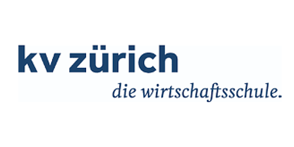
KV Zurich Business School Switzerland. Empowerment in business education.
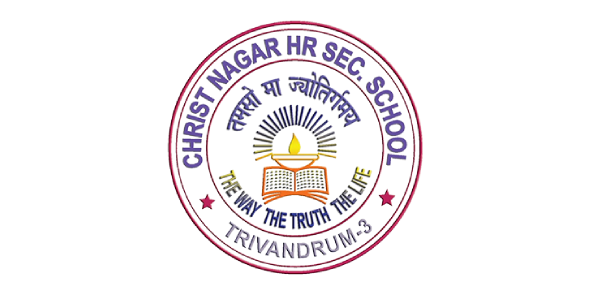
Christ Nagar Higher Secondary School, India – excelling in educating youth.
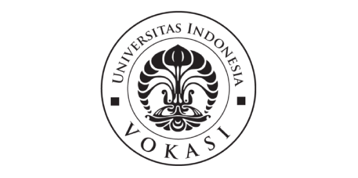
Vocational education program Universitas Indonesia – excellence in vocational training.